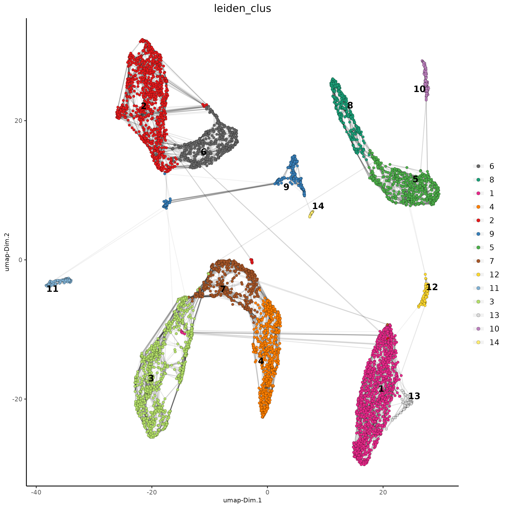
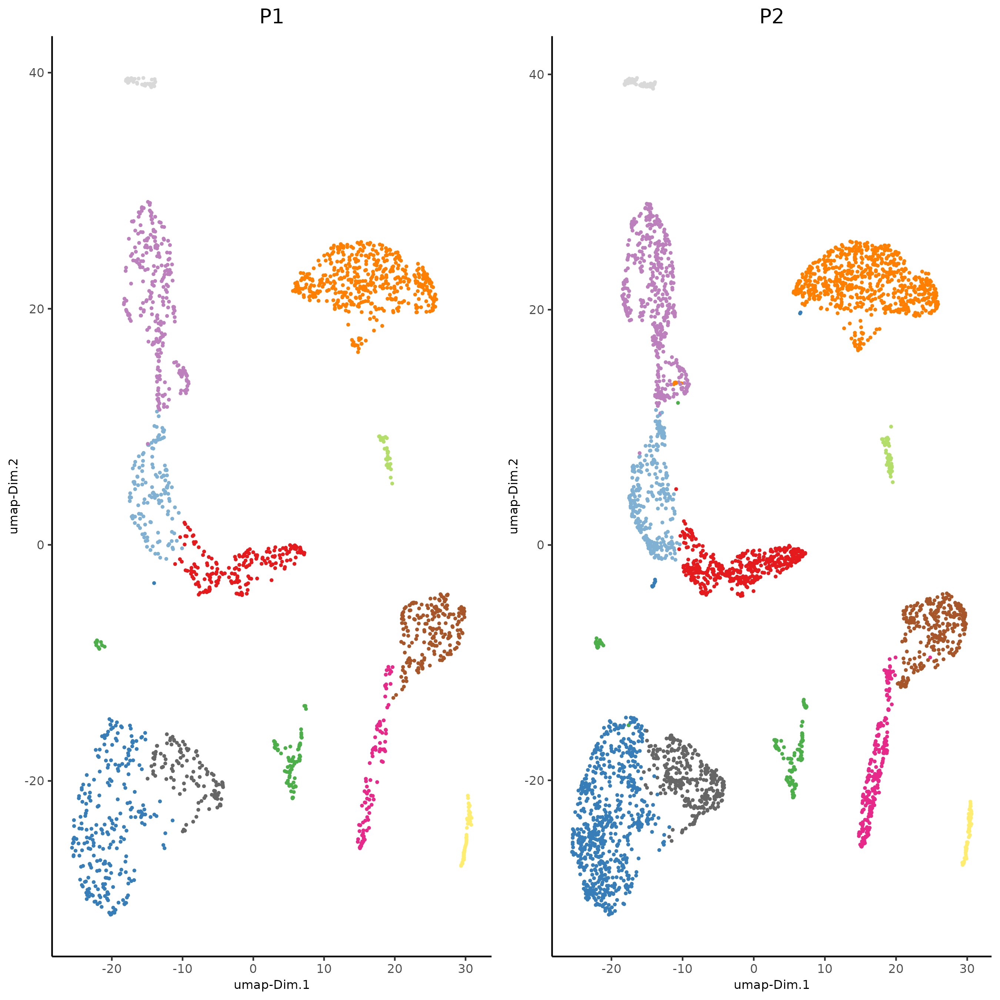

Integration of single cell datasets
2022-09-16
Source:vignettes/singlecell_prostate_integration.Rmd
singlecell_prostate_integration.Rmd
# Ensure Giotto Suite is installed.
if(!"Giotto" %in% installed.packages()) {
devtools::install_github("drieslab/Giotto@suite")
}
# Ensure GiottoData, a small, helper module for tutorials, is installed.
if(!"GiottoData" %in% installed.packages()) {
devtools::install_github("drieslab/GiottoData")
}
library(Giotto)
# Ensure the Python environment for Giotto has been installed.
genv_exists = checkGiottoEnvironment()
if(!genv_exists){
# The following command need only be run once to install the Giotto environment.
installGiottoEnvironment()
}Set up Giotto Environment
library(Giotto)
library(GiottoData)
# 1. set working directory
results_folder = 'path/to/result'
# Optional: Specify a path to a Python executable within a conda or miniconda
# environment. If set to NULL (default), the Python executable within the previously
# installed Giotto environment will be used.
my_python_path = NULL # alternatively, "/local/python/path/python" if desired.
# 2. create giotto instructions
instrs = createGiottoInstructions(save_dir = results_folder,
save_plot = TRUE,
show_plot = FALSE,
python_path = my_python_path)Dataset explanation
This is a tutorial for Harmony integration of different single cell RNAseq datasets using two prostate cancer patient datasets. Ma et al. Processed 10X Single Cell RNAseq from two prostate cancer patients. The raw dataset can be found here
Part 1: Create Giotto object from 10X dataset and join
giotto_P1<-createGiottoObject(expression = get10Xmatrix("path/to/P1_result/outs/filtered_feature_bc_matrix",
gene_column_index = 2,
remove_zero_rows = TRUE),
instructions = instrs)
giotto_P2<-createGiottoObject(expression = get10Xmatrix("path/to/P2_result/outs/filtered_feature_bc_matrix",
gene_column_index = 2,
remove_zero_rows = TRUE),
instructions = instrs)
giotto_SC_join = joinGiottoObjects(gobject_list = list(giotto_P1, giotto_P2),
gobject_names = c('P1', 'P2'),
join_method = "z_stack")Part 2: Process Joined object
giotto_SC_join <- filterGiotto(gobject = giotto_SC_join,
expression_threshold = 1,
feat_det_in_min_cells = 50,
min_det_feats_per_cell = 500,
expression_values = c('raw'),
verbose = T)
## normalize
giotto_SC_join <- normalizeGiotto(gobject = giotto_SC_join,
scalefactor = 6000)
## add gene & cell statistics
giotto_SC_join <- addStatistics(gobject = giotto_SC_join,
expression_values = 'raw')Part 3: Dimension reduction and clustering
## PCA ##
giotto_SC_join <- calculateHVF(gobject = giotto_SC_join)
giotto_SC_join <- runPCA(gobject = giotto_SC_join,
center = TRUE,
scale_unit = TRUE)
# Check screeplot to select number of PCs for clustering
# screePlot(giotto_SC_join, ncp = 30, save_param = list(save_name = '3_scree_plot'))
## WITHOUT INTEGRATION ##
# --------------------- #
## cluster and run UMAP ##
# sNN network (default)
showGiottoDimRed(giotto_SC_join)
giotto_SC_join <- createNearestNetwork(gobject = giotto_SC_join,
dim_reduction_to_use = 'pca',
dim_reduction_name = 'pca',
dimensions_to_use = 1:10,
k = 15)
# Leiden clustering
giotto_SC_join <- doLeidenCluster(gobject = giotto_SC_join,
resolution = 0.2,
n_iterations = 1000)
# UMAP
giotto_SC_join = runUMAP(giotto_SC_join)
plotUMAP(gobject = giotto_SC_join,
cell_color = 'leiden_clus',
show_NN_network = T,
point_size = 1.5,
save_param = list(save_name = "4_cluster_without_integration"))
dimPlot2D(gobject = giotto_SC_join,
dim_reduction_name = 'umap',
point_shape = 'no_border',
cell_color = "leiden_clus",
group_by = "list_ID",
show_NN_network = F,
point_size = 0.5,
show_center_label = F,
show_legend =F,
save_param = list(save_name = "4_list_without_integration"))Harmony is a integration algorithm developed by Korsunsky, I. et al.. It was designed for integration of single cell data but also work well on spatial datasets.
## WITH INTEGRATION ##
# --------------------- #
## data integration, cluster and run UMAP ##
# harmony
#library(devtools)
#install_github("immunogenomics/harmony")
library(harmony)
#pDataDT(giotto_SC_join)
giotto_SC_join = runGiottoHarmony(giotto_SC_join,
vars_use = 'list_ID',
do_pca = F)
## sNN network (default)
#showGiottoDimRed(giotto_SC_join)
giotto_SC_join <- createNearestNetwork(gobject = giotto_SC_join,
dim_reduction_to_use = 'harmony',
dim_reduction_name = 'harmony',
name = 'NN.harmony',
dimensions_to_use = 1:10,
k = 15)
## Leiden clustering
giotto_SC_join <- doLeidenCluster(gobject = giotto_SC_join,
network_name = 'NN.harmony',
resolution = 0.2,
n_iterations = 1000,
name = 'leiden_harmony')
# UMAP dimension reduction
#showGiottoDimRed(giotto_SC_join)
giotto_SC_join = runUMAP(giotto_SC_join,
dim_reduction_name = 'harmony',
dim_reduction_to_use = 'harmony',
name = 'umap_harmony')
plotUMAP(gobject = giotto_SC_join,
dim_reduction_name = 'umap_harmony',
cell_color = 'leiden_harmony',
show_NN_network = T,
point_size = 1.5,
save_param = list(save_name = "4_cluster_with_integration"))
dimPlot2D(gobject = giotto_SC_join,
dim_reduction_name = 'umap_harmony',
point_shape = 'no_border',
cell_color = "leiden_harmony",
group_by = "list_ID",
show_NN_network = F,
point_size = 0.5,
show_center_label = F,
show_legend =F ,
save_param = list(save_name = "4_list_with_integration"))